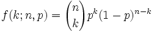
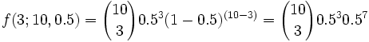
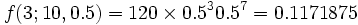

Quincunx Explained

A Quincunx or "Galton Board" (named after Sir Francis Galton) is a triangular array of pegs (have a play with it).
Balls are dropped onto the top peg and then bounce their way down to the bottom where they are collected in little bins.
Each time a ball hits one of the pegs, it bounces either left or right.

But this is interesting: the balls collect in the bins following the classic "Bell Curve" of the normal distribution!
Being indiviudal random events they won't follow the smooth curve of the normal distribution perfectly, but they do tend towards it.
Formula
We can actually calculate the probabilities!
Think about this: a ball ends up in the bin k places from the right when it has taken k left turns.
In this example, all the bounces are to the right except for two bounces to the left. It ended up in the bin two places from the right.
In the general case, when the quincunx has n rows then the ball can have k bounces to the left and (n-k) bounces to the right.
The probability is usually 50% either way, but it could be 60%-40% etc.
So when the probability of bouncing to the left is p the probability to the right is (1-p) and we can calculate the probability of any one path like this:
| The ball bounces k times to the left with a probability of p: pk | ||
| And the other bounces (n-k) have the opposite probability of: (1-p)(n-k) | ||
| So, the probability of following such a path is pk(1-p)(n-k) |
But there could be many such paths! For example the left turns could be the 1st and 2nd, or 1st and 3rd, or 2nd and 7th, etc.
We can list all such paths (LLRRR.., LRLRR..., LRRL...), but there are two easier ways.
How Many Paths
We can use Pascal's Triangle. In fact, the Quincunx is just like Pascal's Triangle, with pegs instead of numbers. The number on each peg shows us how many different paths can be taken to get to that peg. Amazing but true.
Or we can use this formula from the subject of Combinations:

This is commonly called "n choose k" and is also written C(n,k).
It is the calculation of the number of ways of distributing k things in a sequence of n.
Note: The "!" means "factorial". For example 4! = 1×2×3×4 = 24
Putting it all together, the resulting formula is:

(Which, by the way, is the formula for the Binomial Distribution.)
Example:
For 10 rows (n=10) and probability of bouncing left of 0.5 (p=0.5), we can calculate the probability of being 3 bins away from the right as:

also:

(This means there are 120 different paths that
can end with the ball being 3 bins away from the right.)
So we get:

In fact we can build a whole table for rows=10 and probability=0.5 like this:
| From Right: | 10 | 9 | 8 | 7 | 6 | 5 | 4 | 3 | 2 | 1 | 0 |
|---|---|---|---|---|---|---|---|---|---|---|---|
| Probability: | 0.001 | 0.010 | 0.044 | 0.117 | 0.205 | 0.246 | 0.205 | 0.117 | 0.044 | 0.010 | 0.001 |
| Example: 100 balls | 0 | 1 | 4 | 12 | 21 | 24 | 21 | 12 | 4 | 1 | 0 |
Now, of course, this is a random thing so your results may vary from this ideal situation.
Another Example:
When the probability of bouncing left is 0.8 then the table looks like this:
| From Right | 10 | 9 | 8 | 7 | 6 | 5 | 4 | 3 | 2 | 1 | 0 |
|---|---|---|---|---|---|---|---|---|---|---|---|
| Probability | 0.107 | 0.268 | 0.302 | 0.201 | 0.088 | 0.026 | 0.006 | 0.001 | 0.000 | 0.000 | 0.000 |
| Example: 100 balls | 11 | 26 | 30 | 20 | 9 | 3 | 1 | 0 | 0 | 0 | 0 |
Try It Yourself
Run 100 (or more) balls through the Quincunx and see what results you get. I have done this many times myself while developing the software. I never got the perfect result, but always something surprisingly close. Good Luck!